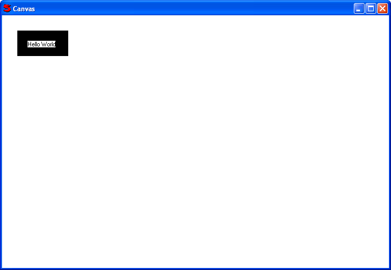

Used to create a window to draw graphics.
The AddItem method is used to add canvas items to the window.
The GetColor method returns the background color the canvas is currently set to use.
For example:
c = CanvasControl().Ctrl
text = CanvasText("Hello World", 50, 50, 200, 100)
text.SetColor(c.GetColor())
c.AddItem(CanvasRect(30, 30, 130, 80))
c.AddItem(text)
Would display:
| CanvasArc | CanvasLine | CanvasStockObject |
| CanvasEllipse | CanvasPolygon | CanvasText |
| CanvasImage | CanvasRect | |
| CanvasItem | CanvasRoundRect |